So gestalten Sie Angebote, Lieferscheine, Bestellungen und Rechnungen
im Erscheinungsbild Ihrer Firma – Schritt für Schritt, mit Bildern.
Modul Company Report Branding Hersteller MPI GmbH, Michael Plöckinger Web www.mpi-erp.at Zielgruppe Administration / Büroleitung, keine Programmierkenntnisse nötig Stand September 2026
Inhalt
Worum geht es? (in zwei Minuten)
Was Sie vorher wissen sollten
Die Einstellungen finden
Welche Dokumente sollen Ihr Design bekommen?
Briefpapier hochladen und Ränder einstellen
Schriften für Überschriften und Text
Logo und Fußzeile
Texte über und unter den Positionen
Ergebnis prüfen: PDF ansehen
Typische Alltagssituationen
Häufige Fragen
Checkliste zum Go-Live
Dieses Handbuch als E-Learning-Kurs in Odoo
Hinweis zur Sprache in den Bildern.
Die Navigationsbilder zeigen eine deutsche Odoo-Oberfläche
(Einstellungen, Berichte (CI), Briefpapier).
Einzelne Feldnamen des Moduls können zusätzlich englisch erscheinen
(z. B. Letterhead PDF, Heading font) –
in diesem Handbuch steht jeweils die deutsche Bedeutung daneben.
1. Worum geht es? (in zwei Minuten)
Odoo erzeugt automatisch PDF-Dateien: Angebote, Aufträge, Lieferscheine,
Einkaufsbestellungen, Rechnungen und Gutschriften. Ohne Zusatzmodul sehen diese
Dokumente nach „Standard-Odoo“ aus – Logo oben, Fußzeile unten, Schrift wie im Layout.
Company Report Branding gibt jeder Firma in Odoo ein eigenes
Erscheinungsbild für genau diese PDFs. Sie stellen das einmal in den Firmeneinstellungen
ein. Danach gilt es automatisch, sobald jemand ein Dokument druckt oder per E-Mail als PDF sendet.
Das können Sie damit steuern:
Briefpapier – Ihr DIN-A4-Hintergrund (Logo, Rahmen, Farbflächen)
Ränder – damit der Text nicht ins Briefpapier läuft
Schriften – Überschriften und Fließtext getrennt
Logo – Standardlogo, eigenes Berichtslogo, oder gar kein Logo (wenn es schon auf dem Briefpapier steht)
Fußzeile – Odoo-Standard, eigener HTML-Text, oder leer
Hinweistexte – feste Sätze über oder unter der Positionstabelle, je Dokumentart
Welche Dokumente – Häkchen, ob z. B. nur Rechnungen oder auch Angebote das Design bekommen
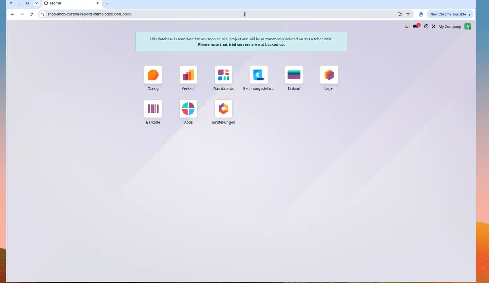
Abb. 1 – Nach dem Anmelden sehen Sie die Odoo-Startseite. Die Gestaltung der PDFs stellen Sie unter Einstellungen ein, nicht in Verkauf oder Rechnungsstellung.
2. Was Sie vorher wissen sollten
Wer darf das einstellen?
Nur Benutzer mit Administrationsrechten (Gruppe „Einstellungen“).
Sachbearbeiter im Verkauf oder in der Buchhaltung drucken danach ganz normal –
sie müssen nichts extra lernen, außer dass die PDFs anders aussehen.
Pro Firma, nicht pro Benutzer
Die Einstellungen hängen am Unternehmen. Haben Sie mehrere Firmen
in derselben Datenbank, kann jede ihr eigenes Briefpapier bekommen.
Zwei getrennte Stellschrauben
Odoo hat bereits unter Einstellungen den Dialog
Configure Document Layout (Dokumentlayout).
Dort wählen Sie das grobe Layout (Light, Boxed, Bold …), Farben und die Standard-Fußzeile.
Company Report Branding sitzt daneben, im Reiter der Firma.
Es übersteuert Logo, Fußzeile, Schriften und legt optional Ihr Briefpapier als Hintergrund.
Beide Stellen ergänzen sich: zuerst Layout wählen, dann CI-Feinschliff.
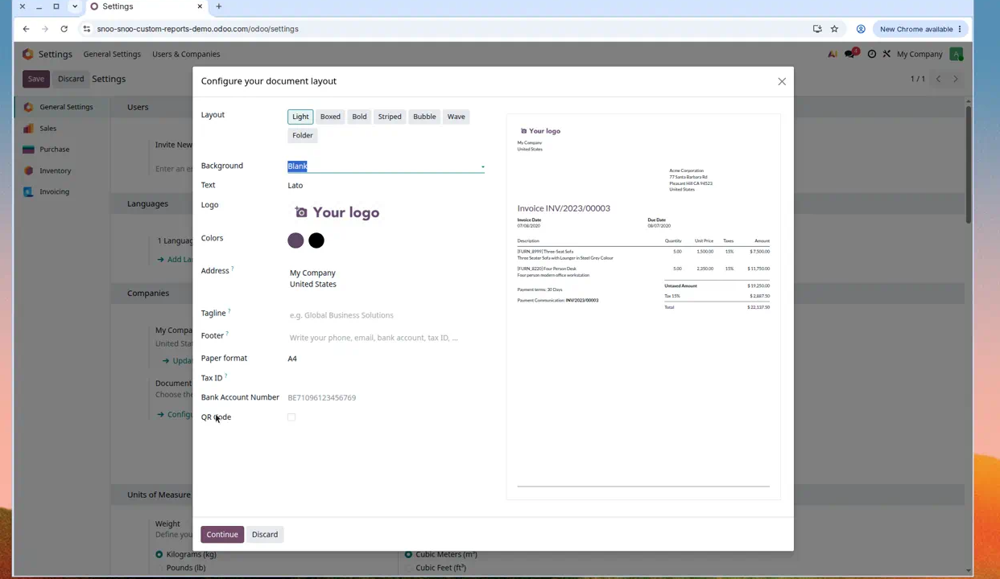
Abb. 2 – Das Standard-Dokumentlayout von Odoo (hier: Light). Diesen Dialog finden Sie unter Einstellungen → Companies → Configure Document Layout. Das Branding-Modul kommt zusätzlich dazu.
Bitte nicht verwechseln.
Der Odoo-Muster-Katalog „Check a sample“ erzeugt ein aufwendig gestaltetes
Marketing-PDF mit mehreren Seiten. Das ist die Funktion PDF-Angebotsdesigner
und nicht dasselbe wie Company Report Branding. Branding wirkt auf die
„klassische“ Berichtsseite mit Adresse, Positionstabelle und Summe.
3. Die Einstellungen finden
Gehen Sie immer denselben Weg. Nach zwei Mal ist er Routine.
Schritt 1. Öffnen Sie die App Einstellungen auf der Startseite.
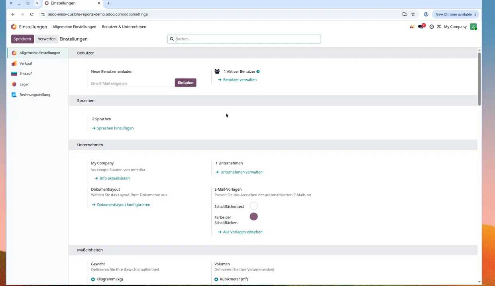
Abb. 3 – Allgemeine Einstellungen. Im Kasten Unternehmen sehen Sie Ihre Firma sowie Info aktualisieren und Unternehmen verwalten.
Schritt 2. Im Abschnitt Unternehmen klicken Sie auf
Unternehmen verwalten – oder direkt auf
Info aktualisieren, wenn nur eine Firma existiert.
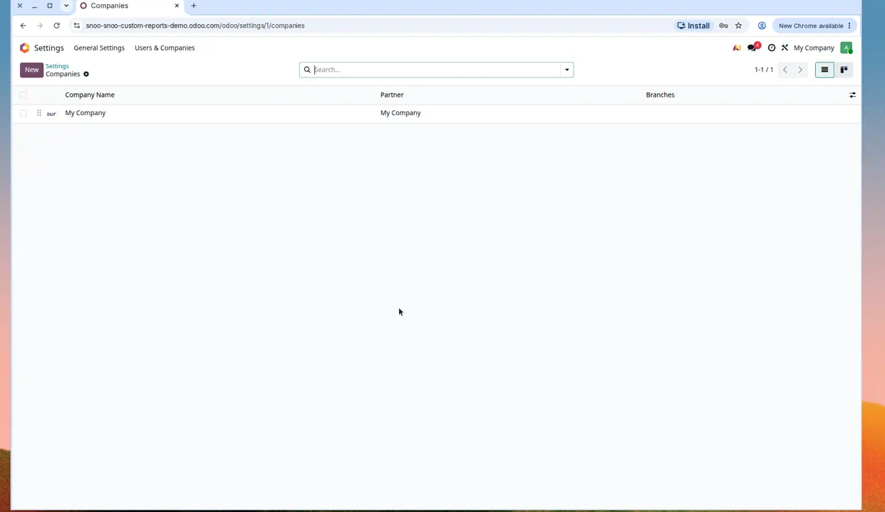
Abb. 4 – Die Firmenliste. Klicken Sie auf den Namen Ihrer Firma (hier: My Company).
Schritt 3. Es öffnet sich die Firmenkarte. Oben gibt es Reiter.
Klicken Sie auf Berichte (CI).
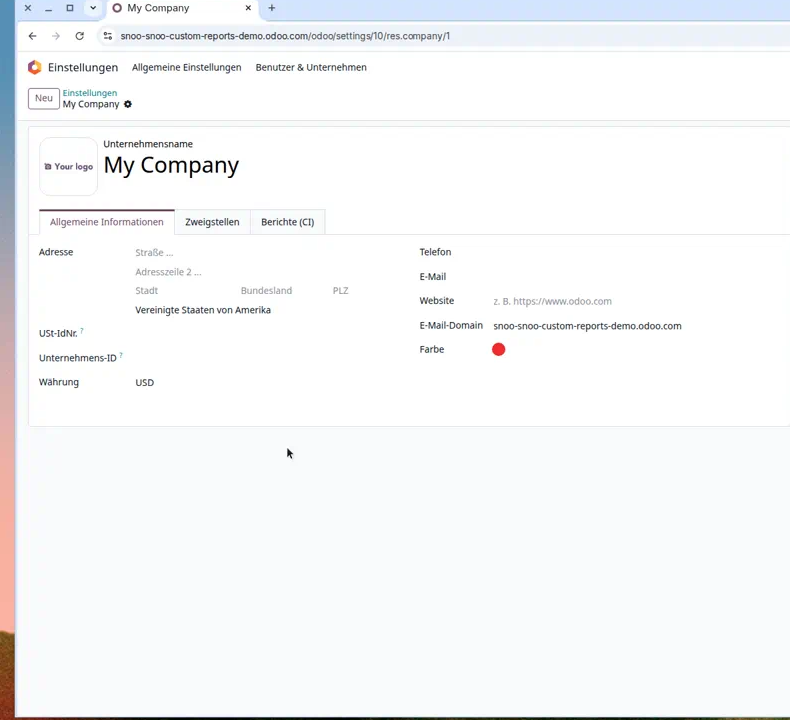
Abb. 5 – Firmenkarte. Der dritte Reiter heißt Berichte (CI). Genau dort gehört die gesamte Gestaltung hin.
Merksatz: Einstellungen → Unternehmen → Ihre Firma → Reiter Berichte (CI).
Speichern Sie am Ende immer mit Speichern oben links.
Ein Wolkensymbol neben dem Firmennamen bedeutet: Es gibt ungespeicherte Änderungen.
4. Welche Dokumente sollen Ihr Design bekommen?
Ganz oben auf dem Reiter steht
Apply branding on these reports
(CI auf diese Berichte anwenden).
Jedes Häkchen schaltet das Corporate Design für eine Dokumentfamilie ein oder aus.
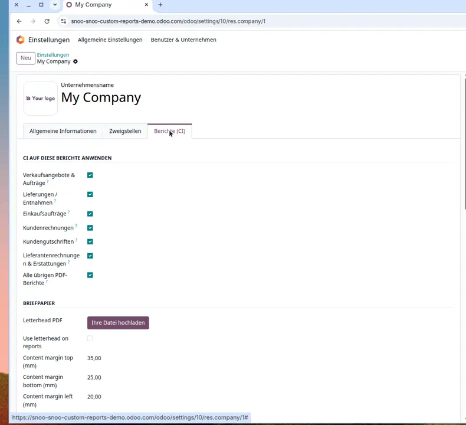
Abb. 6 – Oben „CI auf diese Berichte anwenden“, darunter Briefpapier. Standardmäßig sind alle Häkchen gesetzt.
Feld (Englisch)
Deutsch
Betrifft
Sales quotations & orders
Verkaufsangebote & Aufträge
Angebot und Kundenauftrag
Deliveries / pickings
Lieferungen / Entnahmen
Lieferschein
Purchase orders
Einkaufsaufträge
Bestellung an Lieferanten
Customer invoices
Kundenrechnungen
Ausgangsrechnung
Customer credit notes
Kundengutschriften
Gutschrift an Kunden
Vendor bills & refunds
Lieferantenrechnungen & Erstattungen
Eingangsrechnung und Lieferantengutschrift
All other PDF reports
Alle übrigen PDF-Berichte
alles andere mit Odoo-Standardlayout, inkl. Layout-Vorschau
Praxisbeispiel.
Manche Firmen wollen das Briefpapier nur auf Kunden-PDFs (Angebot, Lieferschein, Rechnung),
aber nicht auf Einkaufsbestellungen. Dann Häkchen bei Purchase orders entfernen und speichern.
5. Briefpapier hochladen und Ränder einstellen
Was ist „Briefpapier“ hier?
Eine PDF-Datei im Format DIN A4, so wie Sie sie vom Grafiker oder aus Word/InDesign
exportieren: Logo, farbiger Kopf, Adressfeld-Markierung, Fußgestaltung.
Odoo verwendet die erste Seite als Hintergrundbild für den Bericht.
Schritt 1. Bei Letterhead PDF (Briefpapier-PDF)
auf Upload your file klicken und die PDF wählen.
Schritt 2. Häkchen setzen bei
Use letterhead on reports
(Briefpapier auf Berichten verwenden).
Ohne dieses Häkchen liegt die Datei nur bereit, erscheint aber nicht auf den PDFs.
Schritt 3. Die vier Content margin-Felder (Inhaltsränder in Millimetern)
so einstellen, dass der Dokumenttext nicht in Logo oder Zierleisten läuft.
Feld
Vorschlag zum Start
Wann höher drehen?
Content margin top (mm)
35
großes Logo oder Kopfleiste oben
Content margin bottom (mm)
25
Bankzeile / QR / Grafik unten
Content margin left (mm)
20
farbiger Seitenstreifen links
Content margin right (mm)
20
farbiger Seitenstreifen rechts
Wichtig.
Das Briefpapier wird als Bild hinter den Text gelegt (kein „echtes“ PDF-unter-PDF).
Feine Vektorlinien können dadurch etwas weicher wirken. Für den Alltag (Angebot, Rechnung)
ist das völlig ausreichend. Testen Sie einmal mit einem echten Dokument, bevor Sie 500 Rechnungen versenden.
Logo schon auf dem Briefpapier?
Dann später bei Report logo den Modus Hide logo wählen,
sonst erscheint das Logo doppelt.
Dasselbe gilt für die Fußzeile: steht die Adresse schon im Briefpapier, Fußzeile auf
No footer text stellen.
6. Schriften für Überschriften und Text
Unter Fonts (Schriften) gibt es zwei Spalten:
Heading (Überschriften wie „Quotation“, „Invoice“) und
Body (übriger Text, Tabellen).
Beide können Sie unabhängig wählen.
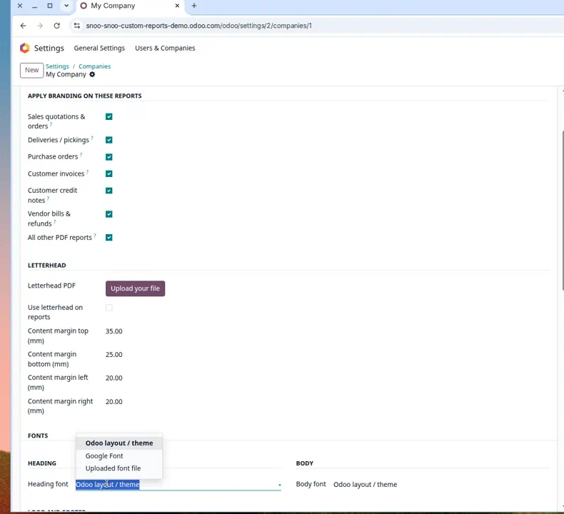
Abb. 7 – Drei Quellen für die Überschrift-Schrift: Odoo-Layout, Google Font oder Datei-Upload.
Option A – Odoo layout / theme
Nichts Extra. Es bleibt die Schrift, die zum gewählten Dokumentlayout gehört
(im Layout-Dialog oft „Lato“ o. ä.). Das ist der sichere Standard.
Option B – Google Font
Wählen Sie Google Font. Es erscheint das Feld
Heading Google Font family bzw. Body.
Tragen Sie den exakten Familiennamen ein, z. B. Roboto,
Open Sans, Montserrat – so wie auf fonts.google.com.
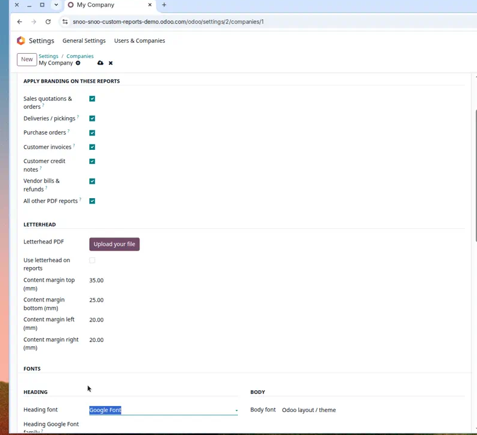
Abb. 8 – Nach der Wahl von Google Font erscheint das Namensfeld. Ohne Namen ändert sich optisch nichts.
Voraussetzung.
Der Server, der die PDFs erzeugt, muss das Internet erreichen können
(fonts.googleapis.com). In stark abgeschotteten Netzen besser Option C verwenden.
Option C – Uploaded font file
Wählen Sie Uploaded font file und laden Sie eine Schriftdatei hoch
(üblich: .ttf, .otf, .woff, .woff2).
Klären Sie mit Ihrer Grafik, ob die Lizenz die Einbettung in Kunden-PDFs erlaubt.
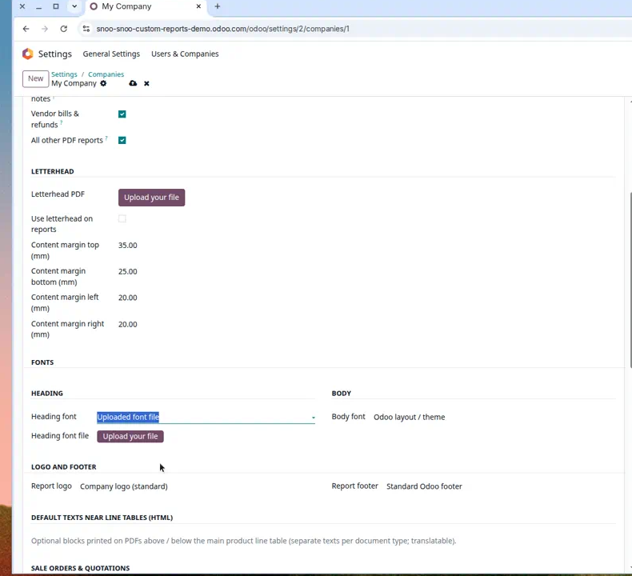
Abb. 9 – Eigene Schriftdatei für Überschriften. Denselben Weg gibt es rechts für den Fließtext.
7. Logo und Fußzeile
Report logo
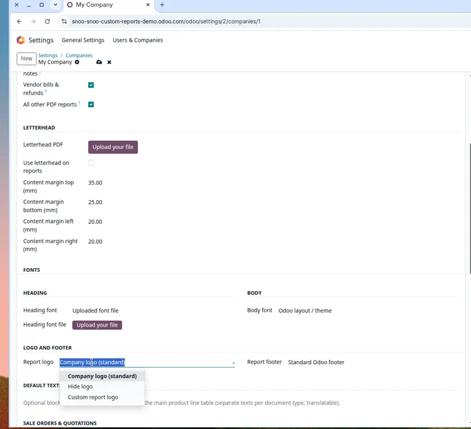
Abb. 10 – Drei Logo-Modi.
Modus
Wirkung
Wann wählen?
Company logo (standard)
Das Logo von der Firmenkarte
Normalfall, ein Logo für alles
Hide logo
Kein Logo im Berichtskopf
Logo steckt schon im Briefpapier
Custom report logo
Eigenes Bild nur für PDFs
Drucklogo in höherer Auflösung oder ohne Claim
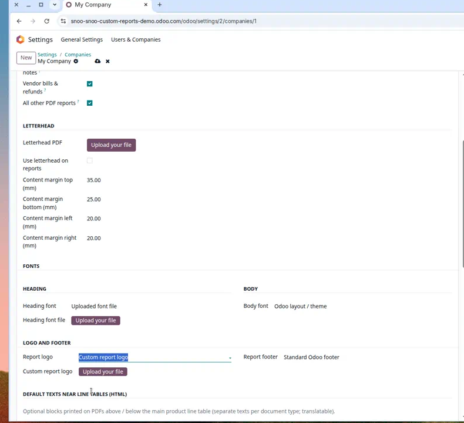
Abb. 11 – Bei Custom report logo muss eine Datei hochgeladen werden. Sonst lässt Odoo das Speichern nicht zu.
Report footer
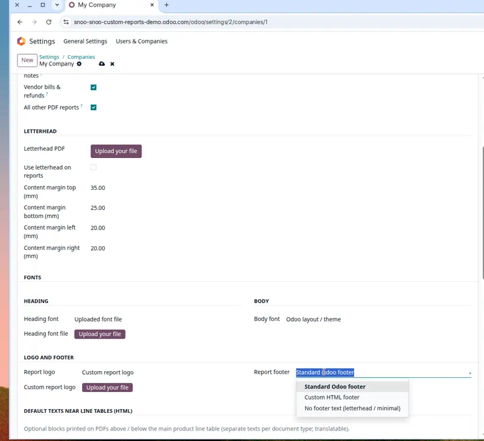
Abb. 12 – Drei Fußzeilen-Modi.
Modus
Wirkung
Wann wählen?
Standard Odoo footer
Text aus dem Dokumentlayout (Telefon, Bank, UID …)
Sie pflegen die Fußzeile zentral im Layout-Dialog
Custom HTML footer
Eigener formatierter Text nur für Berichte
Sie brauchen Fettdruck, Links oder eine andere Zeile als im Layout
No footer text (letterhead / minimal)
Kein Textblock unten
Briefpapier enthält Adresse und Bank bereits
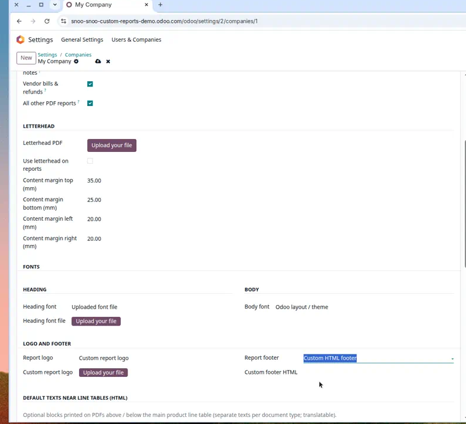
Abb. 13 – Custom HTML footer blendet das Textfeld ein. Leer speichern geht nicht – Odoo verlangt Inhalt.
Kleine Linie unten auf der Seite.
Manche Layouts (z. B. Bubble) zeichnen trotzdem eine Trennlinie. „Kein Fußzeilentext“
entfernt den Text, nicht unbedingt jede grafische Linie des Themes.
8. Texte über und unter den Positionen
Unten auf dem Reiter:
Default texts near line tables (HTML)
(Standardtexte bei Positionstabellen).
Das sind wiederkehrende Hinweise, die auf jedem PDF dieser Art erscheinen –
unabhängig vom einzelnen Angebot.
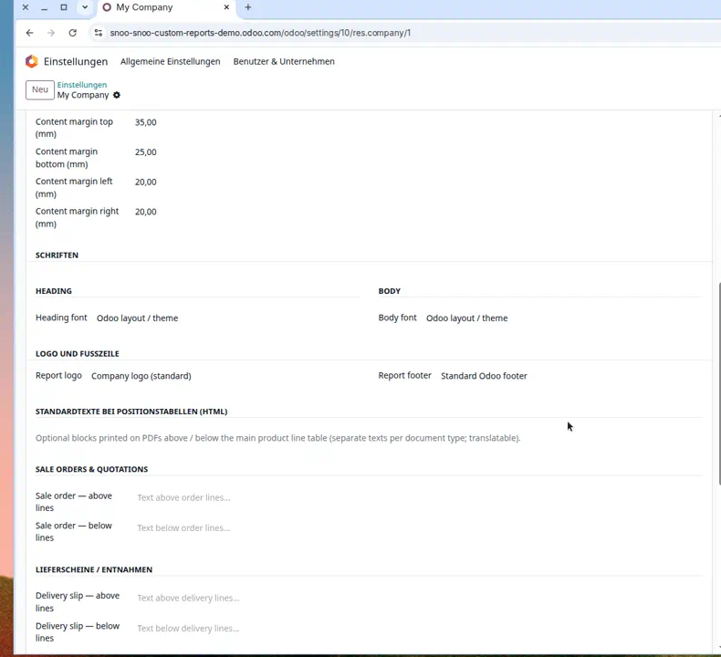
Abb. 14 – Standardtexte bei Positionstabellen: über und unter den Zeilen, getrennt nach Belegart (hier Angebot und Lieferschein).
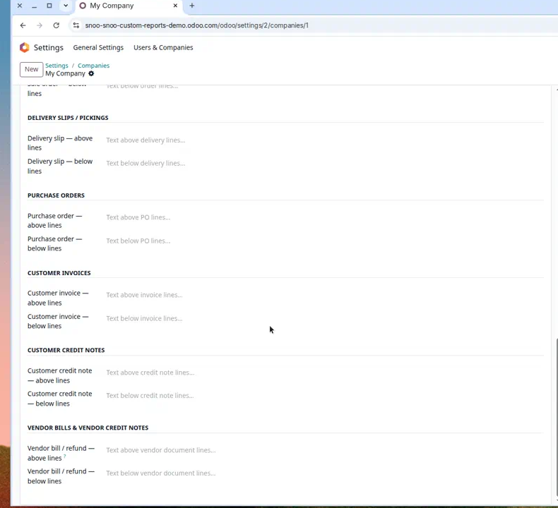
Abb. 15 – Jede Belegart hat „above lines“ (über der Tabelle) und „below lines“ (unter der Tabelle).
Beispiele, die in der Praxis oft gebraucht werden:
Über den Positionen (Angebot): „Preise in EUR, netto, zzgl. gesetzlicher USt.“
Unter den Positionen (Angebot): „Dieses Angebot gilt 14 Tage. Montage nicht enthalten.“
Unter den Positionen (Rechnung): „Zahlbar innerhalb von 14 Tagen ohne Abzug. Es gelten unsere AGB.“
Unter den Positionen (Lieferschein): „Bitte prüfen Sie die Lieferung unverzüglich auf Vollständigkeit.“
HTML heißt: Sie dürfen im Editor Fett, Listen und Absätze verwenden.
Keine ganzen Webseiten einfügen – kurze, klare Blöcke lesen sich auf dem PDF am besten.
Die Texte sind übersetzbar, falls Sie mehrsprachig anbieten.
Diese Blöcke ersetzen nicht die Bemerkung auf dem einzelnen Beleg
(Feld „Terms and Conditions“ / Kundennotiz). Beides kann kombiniert werden:
der Firmen-Standardtext immer, plus eine individuelle Notiz am Auftrag.
9. Ergebnis prüfen: PDF ansehen
Nach dem Speichern prüfen Sie mit einem echten Beleg – nicht nur mit der Layout-Vorschau.
Schritt 1. Öffnen Sie z. B. Sales → Quotations (Verkauf → Angebote)
und ein vorhandenes Angebot – oder legen Sie ein kurzes Testangebot an.
Schritt 2. Drucken bzw. Vorschau: oft über das Zahnrad / Print
bzw. Vorschau. Es öffnet sich das PDF.
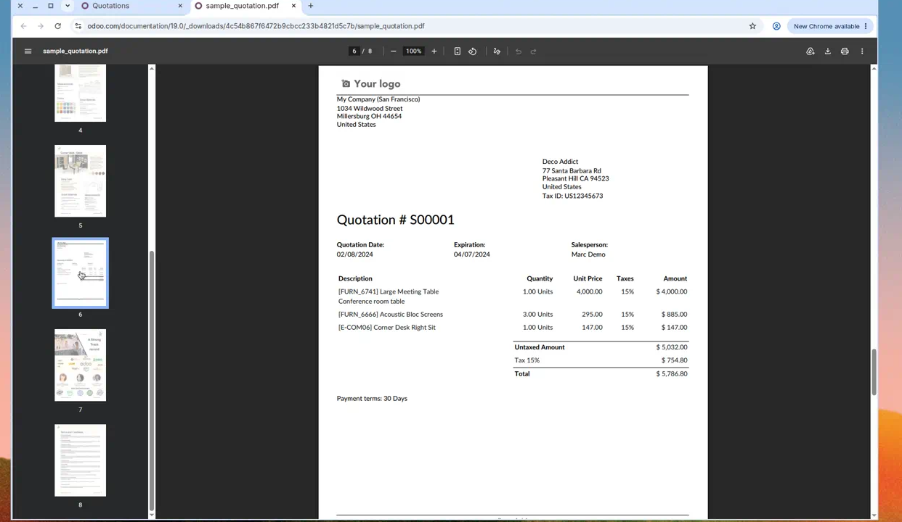
Abb. 16 – Klassische Angebotsseite: Logo, Adressen, Positionen, Summe. Genau diese Seite nimmt Briefpapier, Schriften, Logo- und Fußzeilenmodus auf.
Kontrollieren Sie nacheinander:
Sitzt der Text klar neben Logo und Briefpapier-Grafik?
Erscheint das Logo einmal – nicht doppelt?
Ist die Fußzeile vollständig und lesbar (oder bewusst leer)?
Stimmen Überschrift- und Textschrift?
Stehen die Standardtexte an der richtigen Stelle über/unter der Tabelle?
Zweite Seite: läuft nichts in den unteren Rand?
Mehrseitige Dokumente.
Das Briefpapier basiert auf der ersten PDF-Seite Ihrer Vorlage und wird als Hintergrund verwendet.
Prüfen Sie immer auch Seite 2 eines langen Angebots.
10. Typische Alltagssituationen
„Wir haben schon ein schönes Briefpapier – Odoo soll nichts dazwischenfunken.“
Letterhead PDF hochladen, Use letterhead aktivieren.
Ränder großzügig (oben oft 40–50 mm testen).
Report logo = Hide logo.
Report footer = No footer text.
Schriften: entweder Theme belassen oder Ihre Hausschrift per Upload.
„Wir wollen nur die Hausschrift, kein Briefpapier.“
Häkchen bei Customer invoices an, bei Deliveries / pickings aus.
Lieferscheine bleiben dann im normalen Odoo-Layout.
„Jede Niederlassung hat ein anderes Logo.“
Für jedes Unternehmen den Reiter Berichte (CI) getrennt pflegen.
Benutzer, die die Firma wechseln, bekommen automatisch das passende PDF.
11. Häufige Fragen
Ich sehe den Reiter Report branding nicht.
Sie sind nicht Administrator, oder das Modul ist nicht installiert.
Apps → nach „Company Report Branding“ suchen → Activate. Danach die Firmenkarte neu öffnen.
Ich habe gespeichert, das PDF sieht aber noch alt aus.
Browser-PDF-Cache oder altes heruntergeladenes File. Beleg neu öffnen und erneut drucken.
Prüfen Sie außerdem, ob das Häkchen für genau diese Belegart gesetzt ist
und ob Use letterhead aktiv ist.
Odoo sagt, die Fußzeile bzw. das Logo fehlt.
Bei Custom HTML footer muss Text im HTML-Feld stehen.
Bei Custom report logo muss eine Bilddatei hochgeladen sein.
Das ist Absicht, damit keine leeren PDFs entstehen.
Google-Schrift erscheint nicht im PDF.
Name prüfen (Groß/Kleinschreibung, z. B. „Open Sans“ nicht „Opensans“).
Falls der PDF-Dienst keinen Internetzugang hat: Schriftdatei hochladen.
Wirkt das auch auf Excel-Exporte?
Nein. Nur auf PDF-Berichte, die das externe Odoo-Layout verwenden.
Kann ich pro Kunde ein anderes Briefpapier hinterlegen?
Nein – die Gestaltung hängt an der Firma (res.company), nicht am Kontakt.
Für mehrere Marken legen Sie in Odoo mehrere Unternehmen an oder sprechen Sie uns auf eine Erweiterung an.
Dokumentlayout (Light/Boxed/…) gewählt und Standardfußzeile gefüllt
Briefpapier-PDF (A4) vom Grafiker erhalten
Briefpapier hochgeladen und „Use letterhead“ gesetzt – oder bewusst weggelassen
Ränder an einem Testdokument justiert
Logo-Modus gewählt (kein Doppel-Logo)
Fußzeilen-Modus gewählt
Schriften getestet
Häkchen je Belegart geprüft
Standardtexte über/unter Positionen formuliert
Test: Angebot, Lieferschein, Rechnung – jeweils Seite 1 und Seite 2
Eine Kollegin / ein Kollege hat das PDF gegengelesen
Save bestätigt, Testdatenbank oder Testdokument archiviert
13. Dieses Handbuch als E-Learning-Kurs in Odoo
Sie können denselben Stoff in der Odoo-App eLearning (website_slides)
als Kurs bereitstellen. Zwei Wege:
Weg A – Fertiges Kursmodul installieren
Das optionale Addon company_report_branding_elearning
legt den Kurs „Company Report Branding – Anwendertraining“ an:
Lektionen als Artikel, dieses PDF zum Download, Videos als Zusatzmaterial, Abschlusstest.
Voraussetzung: App eLearning ist installiert.
Weg B – Kurs von Hand anlegen
App eLearning installieren.
Neuer Kurs, Typ Training, Sichtbarkeit z. B. „Angemeldete Benutzer“.
Abschnitte anlegen wie im Inhaltsverzeichnis (Kapitel 1–12).
Inhaltstyp Dokument: diese PDF-Datei hochladen, Download erlauben.
Inhaltstyp Artikel: Texte aus den Lektionsdateien unter docs/elearning/ kopieren.
Inhaltstyp Video: die MP4-Dateien aus docs/user_guide/videos/
bei YouTube, Vimeo oder Google Drive hinterlegen und die URL einfügen
(Odoo spielt lokale MP4 in eLearning typischerweise über diese Quellen ab).
Zusätzlich können Sie die Dateien als „Additional Resource“ zum Herunterladen anhängen.
Zum Schluss ein Quiz mit den Fragen aus docs/elearning/quiz.md.
Die Dateien liegen im Repository unter docs/.
Videos und PDF sind zum direkten Download für Schulungsteilnehmer gedacht.
Kurze technische Randnotiz (für IT, nicht nötig zum Bedienen)
Odoo 19, technischer Name company_report_branding, Lizenz LGPL-3.
Für Briefpapier-Hintergrund wird die erste PDF-Seite gerastert (PyMuPDF / requirements.txt, empfohlen auf Odoo.sh).
Hochgeladene Schriften werden über eine geschützte Token-URL ausgeliefert.
Wirkt auf die gängigen externen Layouts: Light, Striped, Boxed, Bold, Folder, Wave, Bubble.
Teile des Moduls wurden mit Unterstützung von KI-Werkzeugen erstellt; Verantwortung für Prüfung, Test und Compliance: MPI GmbH.
Screenshots stammen von der Demo-Instanz (Odoo 19, englische Oberfläche). Angaben ohne Gewähr; Bedienung kann je nach Studio-Anpassungen leicht abweichen.